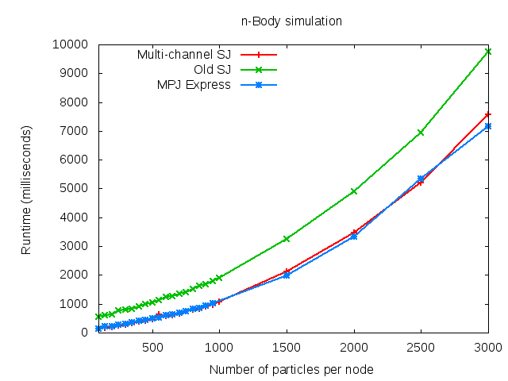
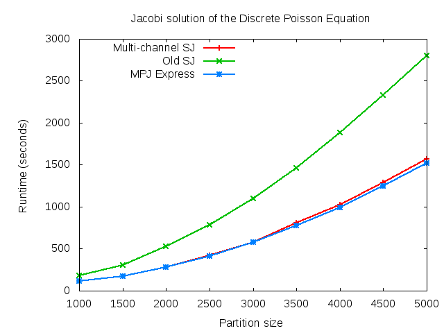

The session-typed programming language Session Java (SJ) has proved to be an effective tool for distributed programming, promoting structured programming for communications and compile-time safety.
This paper investigates the use of SJ for session-typed parallel programming, and introduces new language primitives for chained iteration> and multi-channel communication. These primitives allow the efficient coordination of parallel computation across multiple processes, thus enabling SJ to express the complex communication topologies often used by parallel algorithms. We demonstrate that the new primitives yield clearer and safer code for pipeline, ring and mesh topologies through implementations of representative parallel algorithms.
We then present a semantics and session typing system including the new primitives, and prove type soundness and deadlock-freedom for our implementations. The benchmark results show that the new SJ is substantially faster than the original SJ and performs competitively against MPJ Express used as reference.
Published version via DOI | Paper | Long version | Slides | www

Comparison of implementations of n-body simulation in SJ with and without multi-channel primitives.

Comparison of implementations of a Jacobi method for solving the Discrete Poisson Equation in SJ with and without multi-channel primitives.